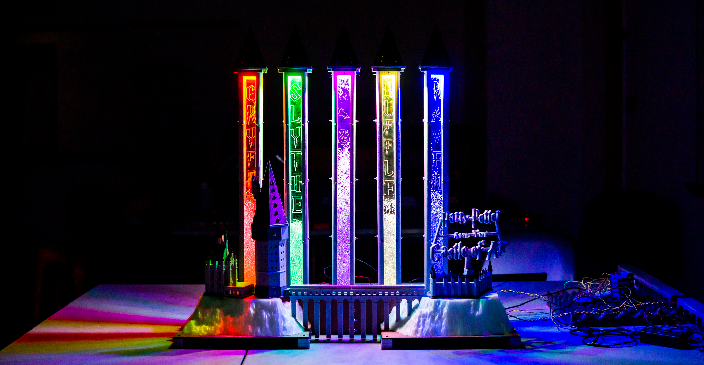

Principles of Engineering: Castle of Air
Castle of Air is a physical music visualizer that takes a song input from the user and receives the audio sound wave to visualize the different prominent frequencies of the song. I was working in a group with four other students to extract the frequencies and beat of the songs. I designed and fabricated the electrical components of the physical music visualizer.
The image on the bottom left highlights the third iteration of the sound input board. I included a DC filter and an amplifier in the circuit to ensure that I could see the core sound wave. I used an Arduino to receive the sound input and performed Fourier Transform on the sound wave to extract the frequencies.
After testing that the prototype of the sound input board worked, I designed a PCB on KiCAD (as shown in the middle and right bottom pictures).
I also worked closely with the Software sub-system in my team to control the lights to represent the beat of the songs.
Alongside my team, I created a website that showcased the contributions and journey of the project: Castle of Air